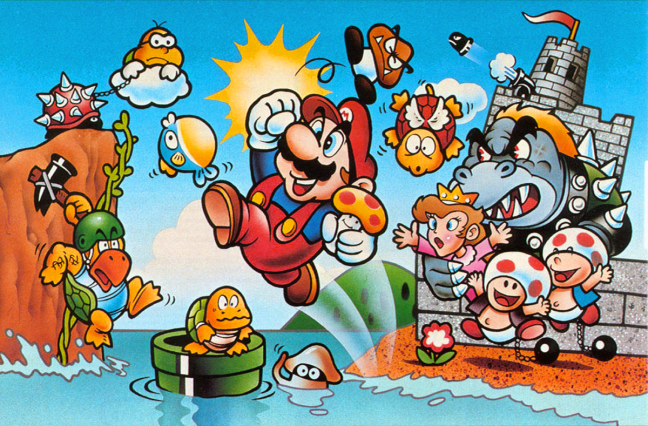
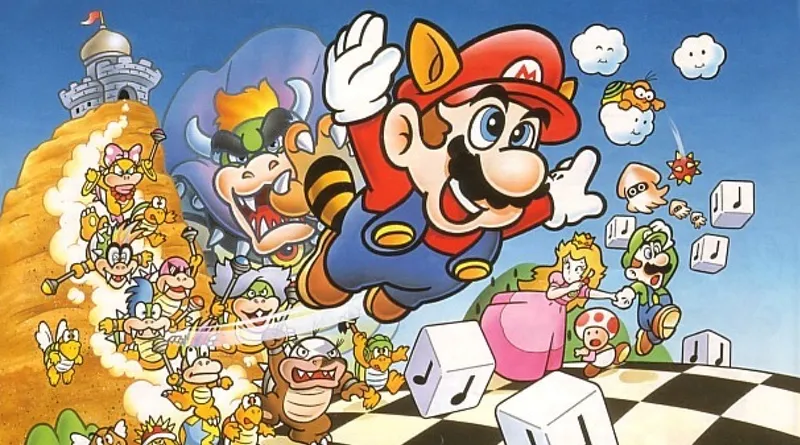
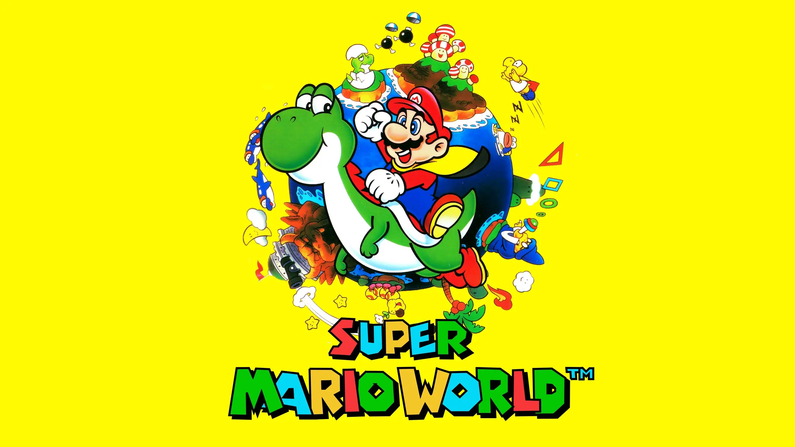

Super Mairo
Super Mario é uma série de jogos eletrônicos de plataforma, criada pela Nintendo, baseada e estrelada pelo
encanador fictício Mario.
Alternativamente chamada de série Super Mario Bros. ou simplesmente série Mario, é a série central da ampla
franquia Mario.
Super Mario Bros. (1985)

Sinopse:
Os jogadores controlam Mario, ou seu irmão Luigi no modo multijogador, enquanto
viajam pelo Reino Cogumelo para resgatar a Princesa Peach de Bowser. Eles devem percorrer os mundos em uma
visão em rolagem lateral, evitando perigos como inimigos e buracos com a ajuda de potencializadores como o
Supercogumelo, Flor de Fogo e Superestrela.
Assista ao trailer
Super Mario Bros. 2 (1988)

Sinopse:
A história de SMB2 assenta na premissa de que tanto Mário como os outros estão a
viver um sonho. Nesse sonho, cabe ao jogador guiar Mário e as restantes personagens pelo reino de Subcon,
que está a ser atacado pelo rei sapo, Wart.
Assista ao trailer
Super Mario Bros. 3 (1990)

Sinopse:
Bowser retornou ao Reino dos Cogumelos e com seus sete Koopalings
recém-introduzidos, ele tenta conquistá-lo novamente. Ele envia seus Koopalings para sete reinos do Mundo
dos Cogumelos para capturar o rei daquela área, roubar suas varinhas mágicas e alterar a aparência dos reis.
Assista ao trailer
Super Mario World (1991)

Sinopse:
Mario, Luigi e a princesa Toadstool foram tirar férias em Dinosaur Land. Mas, durante
as férias, Bowser rapta a amável Princesa! Ele também se apodera de Dinossaur Land, e aprisiona seus
habitantes em ovos mágicos, entregando-os aos seus sete filhos que são os Koopalings! Mario e Luigi
enfrentam desafios por 7 mundos diferentes, até enfim derrotar mais uma vez o terrível Bowser e salvar a
Princesa e os habitantes de Dinosaur Land.
Assista ao trailer